Endo Fins/Cannibalism
Endo Fins/Cannibalismの理解には、
Fish、
Finned Fish、
Franken/Mutant Fish、
BaseSet/CoverSet
を十分に理解していることが必要です。
Franken/MutantFishでは、”BaseSetとCoverSetのそれぞれのHouse群は重なりがない”の条件がついていました。
ここではこの条件を緩めます。（⇒Cannibalism）
Endo Fin Fish
Endo Finsは、BaseSetを構成するHouse群に重なりがある場合です。
N次Fishについて、N個のHouse群がBaseSetを構成し、これに対応するN個のHouse群がCoverSetとなっているとします。
BaseSetのHouse群が重なるので、必然的に行・列・ブロックが混在するFranken/Mutantタイプです。
BaseSetの重なり部分のセルをEndo Finsといいます。
EndoFinは真であり、EndoFinを除外するセル・候補数字(以下で説明する条件あり）は偽となります。
(1)Fish（基本Fish、BaseSet/CoverSetに重なりはない）
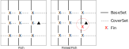
【左図】
- 【左図】N次Fishを考えます。Fishを構成するセルは、それぞれがBaseSetのHouseに含まれます。(BaseSetはFishの完全被覆）
"Fishを構成するセル群(Fishセル群)"が先にあって、これを完全被覆するBaseSet(N個のHouse群)を求めるのが順序ですが、 実際にはN個の重なりのないHouse群を求めて、これをFishとしてももよいでしょう。 - CoverSetは、BaseSet="Fishセル群" を完全に被覆するN個のHouse群です。 また、CoverSetのどれかのHouseに含まれ、Fishセル群に含まれないセル▲ があるとします。
- Fishを構成するセルには、位置は決まらないが、Fish内のどこかに真値のセルがあります（Lockedの状態）。 BaseSetを構成するそれぞれのHouseは、1つずつ真を含みます（真値のセルを含み）。 CoverSetを構成するそれぞれのHouseは、1つずつ真（真値のセルを含み）を含みます。 Fish全体で真はN個あります。
- Fishに含まれないセル▲が真とすると、対応するCoverSetのHouseでは 真 を含まなくなります。
これにより、CoverSetの真は(N-1)個になります。これはあり得ないので、セル▲は偽となります。
- Fin付きN次Fishを考えます。通常のFishに、BaseSetに含まれ CoverSetに含まれないセル
（X:Finセル）が付加する状態です。
- CoverSetは、Fishを構成する全てのセル含むとします。また、Fishに含まれないセル▲があるとします。
- セル▲とFinセルが同じHouse(BseSet、CoverSetのいずれのHouseとも異なる）があるとします。 セル▲が真とすると、Fishを被覆するCoverSetが1個減ります。 つまり、CoverSetには(N-1)個の真しかないことになります。よって、セル▲は偽となります。 （最初の部分『セル▲とFinセルが同じHouseに属するとき』は、Finが複数あり、また異なるHouseに属することもあるので、 『セル▲が全てのFinをスコープしているとき』の方が分かり易いでしょう。）
(2)Franken/Mutant Fish（F/M Fish)
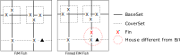
- 基本Fishの BaseSet/CoverSetが、行/列または列/行の構成であるのに対し、 Franken/Mutant Fishは、BaseSetとCoverSetには、行・列・ブロックが混在します。 行・列・ブロックのどのような組み合わせでもFishの論理が成立します。
- (1)通常のFish の説明でも、図は列/行ですが、Fishアルゴリズムの説明文の中には行と列は含んでいません。 また、ブロックもHouseであることから、Franken/Mutant Fishが成立します。
(3)Endo Fin Fish
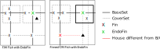
- 【左図】N次F/M FishでBaseSetに重なりがあるケースを考えます。 重なり部分のセルXをEndo Finと呼びます。
- CoveSetのEndoFinセルを含むHouseに属し、かつBaseSetに属さないセル▲は偽です。 これが真とすると、このHouseにはFish構成セルの真はないことになり、 残りの (N-1)個のCoverSetのHouseにN個の真を配置することはできません。
- 【右図】Fin付きのN次F/M FishでBaseSetに重なりがあるケースです。
- セル▲が全てのFin（通常のFinとEndoFin）をスコープしているとき、セル▲は偽です。
なお、この場面にはLocked Pair、Finned Xwing、Finned SwordFish、Finned JellyFish、Skyscraper、 EmptyRectangl、W Wing、Coloring Wrap、Remote Pair、ALS-XZ、ALS XY-Wing、Als Death Blossom、 ALS Chainの解もあり、数独を解く上ではこれらの解法で間に合うので、Endo Fin Fishを見ることは少ないでしょう。 逆に言うと、Endo Fin Fishは様々な解法の裏にある基本的な原理の11つなのでしょう。
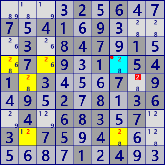
Franken/Mutant SwordFish with Endo Fin
Digit: #2
BaseSet: r4 c27
CoverSet: r8 b46v
Endo Fin: r4c7
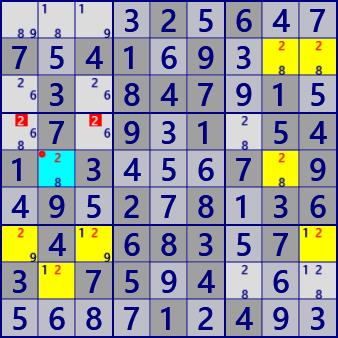
Franken/Mutant JellyFish with Endo Fin
Digit: #2
BaseSet: r257 c2
CoverSet: c89 b47
Endo Fin: r5c2
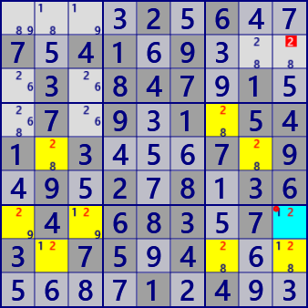
Franken/Mutant JellyFish with Endo Fin
Digit: #2
BaseSet: r7 c2 b69
CoverSet: r5 c79 b7
Endo Fin: r7c9
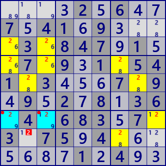
Franken/Mutant Squirmbag with Endo Fin
Digit: #2
BaseSet: r57 c137
CoverSet: r3 b4679
Endo Fin: r7c13
Paste the next 81 digits onto the grid and solve with /Solve/MultiSolve/
....2.6..7.41.9....3.847.1..7.9.1.541.3...7.9.9.2.8.36.4.683.7.3.75.4.......1.4..
Endo Fin Fish解析プログラム
Endo Fin Fishの解析プログラムは、Franken/Mutant Fishとほぼ同じです。
違いは、Base/CoverSetに重なりを許すことだけです。
Endo Fin Fishの解析アルゴリズムは、
”EndoFinはFinであり、通常のFinを含めて全てのFinを除外できる位置には真はない。”に基づいています。
アルゴリズムを考える上では、次のサイトが参考になります。
http://forum.enjoysudoku.com/search.php?keywords=Endo&t=4993&sf=msgonly
public partial class FishGen: AnalyzerBaseV2{
// http://forum.enjoysudoku.com/search.php?keywords=Endo&t=4993&sf=msgonly
// ★latest viewpoint★
// Fin Cell: Any cell that's in more Base Sectors than Cover Sectors.
//
// Possible Elimination Cell: Any cell that's in more Cover Sectors than Base Sectors.
//
// Actual Elimination Cell: All possible elimination cells if no fin cells exist.
// Otherwise, all possible elimination cells that are a buddy to every fin cell.
// An exception to the buddy restriction exists for Kraken fish.
//
// Endo-fin
// http://www.dailysudoku.com/sudoku/forums/viewtopic.php?p=32379&sid=8fb87da8d9beec9c11a2909cae5adecf
public bool EndoFinnedFMFish( ){
for( int sz=2; sz<=7; sz++ ){ //(5:Squirmbag 6:Whale 7:Leviathan)
for( int no=0; no<9; no++ ){
if( EndoFinnedFMFish_sub(sz,no,FMSize:27,FinnedF:true,EndoF:true,CannF:false) ) return true;
}
}
return false;
}
public bool EndoFinnedFMFish_sub( int sz, int no, int FMSize, bool FinnedF,
bool EndoF=false, bool CannF=false ){
int noB=(1<<no);
int BaseSel=0x7FFFFFF, CoverSel=0x7FFFFFF;
FishMan FMan=new FishMan(this,FMSize,no,sz);
foreach( var Bas in FMan.IEGet_BaseSet(BaseSel,EndoF) ){ //BaseSet生成
foreach( var Cov in FMan.IEGet_CoverSet(Bas,CoverSel,CannF) ){ //CoverSet生成
if( AnMan.CheckTimeOut() ) return false;
Bit81 FinB81 = Cov.FinB81 | Bas.EndoFin;
Bit81 E=Cov.CoverB81-Bas.BaseB81;
Bit81 ELM=new Bit81();
//★latest viewpoint★(BaseSetのみ重なりありなので★原理が使える）
foreach( var rc in E.IEGet_rc() ){
if( (FinB81-ConnectedCells[rc]).Count==0 ) ELM.BPSet(rc);
}
if( ELM.Count>0 ){
foreach( var P in ELM.IEGetUCeNoB(pBDL,noB) ){ P.CancelB=noB; SolCode=2; }
if( SolCode>0 ){
if( SolInfoDsp ){
_Fish_FishResult(no,sz,Bas,Cov,(FMSize==27)); //27:Franken/Mutant
}
//Console.WriteLine(ResultLong);
if( !AnMan.SnapSaveGP(true) ) return true;
}
}
}
}
return false;
}
}(4)Cannibalism
- 【左図】N次F/M FishでCoverSetに重なりがあるケースを考えます。 これをCannibalistic セル(X)とよびます。
- Cannibalistic セルは偽です。これが真とする、CoverSetのN個のHouseには真のFish構成セルの真が(N-1)個しか含まれません。
- 【右図】Fin付きのN次F/M FishでCoverSetに重なり(Cannibalistic セル）があり、かつ通常のFinがあるとします。 通常のFinは、BaseSetに含まれCoverSetに含まれないセルです。
- Cannibalistic セルと同じHouseに属し、かつBaseSetに属さないセル(▲)があって、 これがFinセルを(X)を除外できれば、 このセル(▲)は偽です。これが真とする、▲を含むCoverSetには真のFish構成セルはないことになり、 CoverSetの残りの(N-1)個のHouseにN個の真のFish構成セルを配置することになりますが、これは不可能です。
Cannibalistic Fishの例を示します。この例も、同じ問題の同じ場面のCannibalistic Fishで、左上のみがFinなしです。 Endo Fin Fishと同様に多数の解があり、ほとんどはFin付きです。これらはGNPXの複数解解析でみることができます。
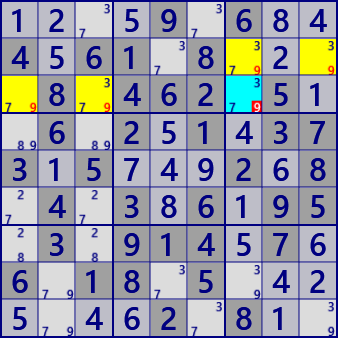
Cannibalistic Franken/Mutant Xwing
Digit: #9
BaseSet: r2 b1
CoverSet: r3 b3
Cannibalistic: r3c7
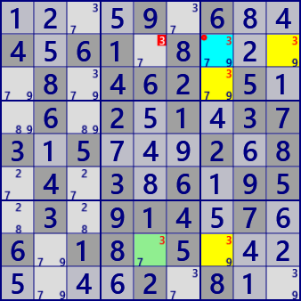
Finned Cannibalistic Franken/Mutant Xwing
Digit: #3
BaseSet: r8 b3
CoverSet: r2 c7
FinSet: r8c5
Cannibalistic: r2c7
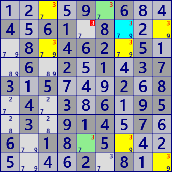
Finned Cannibalistic Franken/Mutant JellyFish
Digit: #3
BaseSet: r138 c9
CoverSet: r29 c37
FinSet: r1c6 r8c5
Cannibalistic: r2c7
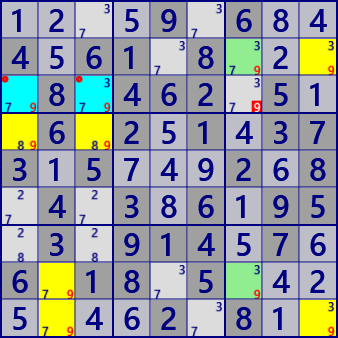
Finned Cannibalistic Franken/Mutant Squirmbag
Digit: #9
BaseSet: r2 c123 b9
CoverSet: r3 c9 b147
FinSet: r28c7
Cannibalistic: r3c13
Paste the next 81 digits onto the grid and solve with /Solve/MultiSolve/
....9.6..4.61.8....8.462.5..6.2.1.373.5...2.8.4.3.6.95.3.914.7.6.18.5.......2.8..
Cannibalistic Fish解析プログラム
すでに必要な補助的プログラムは作成済みであり、そのパラメータ制御で解析プログラムは作れます。
public partial class FishGen: AnalyzerBaseV2{
//Autocannibalism
//http://www.dailysudoku.com/sudoku/forums/viewtopic.php?p=26306&sid=13490447f6255f8d78a75b647a9096b9
//http://forum.enjoysudoku.com/als-chains-with-overlap-cannibalism-t6580-30.html
//http://www.dailysudoku.com/sudoku/forums/viewtopic.php?t=219&sid=dae2c2133114ee9513a6a37124374e7c
//http://www.dailysudoku.co.uk/sudoku/forums/viewtopic.php?p=1180&highlight=#1180
//http://forum.enjoysudoku.com/restricted-common-adjacency-rules-t6642-15.html
//.6...52..4..1..65.....6..3....3...65.5........7.5.....681457.......2.517.2.9..846
//The Ultimate FISH Guide
//http://forum.enjoysudoku.com/the-ultimate-fish-guide-t4993.html#p37011
public bool CannibalisticFMFish( ){
for( int sz=2; sz<=7; sz++ ){//Finあり はサイズ7まで
for( int no=0; no<9; no++ ){
if( CannibalisticFMFish_sub(sz,no,FMSize:27,FinnedF:true,EndoF:false,CannF:true) ) return true;
}
}
return false;
}
public bool CannibalisticFMFish_sub( int sz, int no, int FMSize,
bool FinnedF, bool EndoF=false, bool CannF=false ){
int noB=(1<<no);
int BaseSel=0x7FFFFFF, CoverSel=0x7FFFFFF;
FishMan FMan=new FishMan(this,FMSize,no,sz);
foreach( var Bas in FMan.IEGet_BaseSet(BaseSel,EndoF) ){ //BaseSet生成
foreach( var Cov in FMan.IEGet_CoverSet(Bas,CoverSel,CannF) ){ //CoverSet生成
if( AnMan.CheckTimeOut() ) return false;
Bit81 FinB81 = Bas.BaseB81 - Cov.CoverB81;
if( FinB81.Count==0 ){
foreach( var P in Cov.CannFin.IEGetUCeNoB(pBDL,noB) ){
P.CancelB=noB; SolCode=2;
}
if(SolCode>0){
if( SolInfoDsp ){
_Fish_FishResult(no,sz,Bas,Cov,(FMSize==27));
}
//Console.WriteLine(ResultLong);
//___Debug_CannFish("Cannibalistic");
if( !AnMan.SnapSaveGP(true) ) return true;
}
}
else{
FinB81 |= Cov.CannFin;
Bit81 ELM =null;
Bit81 E=(Cov.CoverB81-Bas.BaseB81) | Cov.CannFin;
ELM=new Bit81();
foreach( var rc in E.IEGet_rc() ){
if( (FinB81-ConnectedCells[rc]).Count==0 ) ELM.BPSet(rc);
}
if( ELM.Count>0 ){
foreach( var P in ELM.IEGetUCeNoB(pBDL,noB) ){ P.CancelB=noB; SolCode=2; }
if( SolCode>0 ){
if( SolInfoDsp )_Fish_FishResult(no,sz,Bas,Cov,(FMSize==27));
//Console.WriteLine(ResultLong);
//___Debug_CannFish("Finned Cannibalistic");
if( !AnMan.SnapSaveGP(true) ) return true;
}
}
}
}
}
return false;
}
private void ___Debug_CannFish(string MName){
using( var fpX=new StreamWriter("▼DebugP.txt",true) ){
string st="";
pBDL.ForEach(q =>{ st += (Math.Max(q.No,0)).ToString(); } );
st=st.Replace("0",".");
fpX.WriteLine(st+" "+MName);
}
}
}